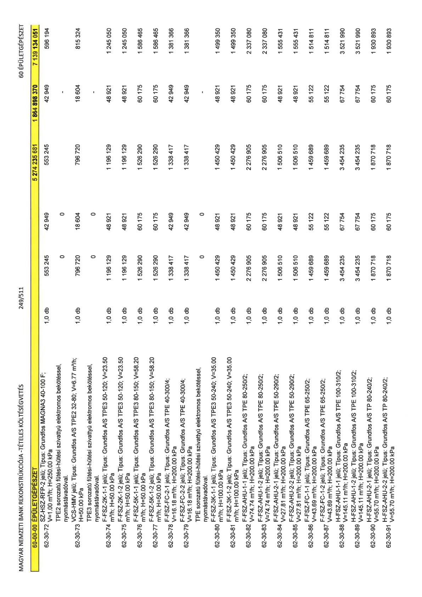

| Tétel | Menny. | Egys. | Anyag e.ár (net HUF) | Díj e.ár (net HUF) | Anyag összesen (net HUF) | Díj összesen (net HUF) | Anyag+Díj összesen (net HUF) |
|---|---|---|---|---|---|---|---|
| 62-30-72 SZ-HSZ-RFP-2 jelű; Típus: Grundfos MAGNA3 40-100 F; V=1.00 m3/h; H=250.00 kPa | 1,0 | db | 553 245 | 42 949 | 553 245 | 42 949 | 596 194 |
| TPE2 sorozatú fűtési-hűtési szivattyú elektromos bekötéssel, nyomástávadóval. | 0 | 0 | 0 | 0 | 0 | 0 | 0 |
| 62-30-73 VCS-HMV jelű; Típus: Grundfos A/S TPE2 32-80; V=6.77 m3/h; H=50.00 kPa | 1,0 | db | 796 720 | 18 604 | 796 720 | 18 604 | 815 324 |
| TPE3 sorozatú fűtési-hűtési szivattyú elektromos bekötéssel, nyomástávadóval. | 0 | 0 | 0 | 0 | 0 | 0 | 0 |
| 62-30-74 F-FSZ-2K-1-1 jelű; Típus: Grundfos A/S TPE3 50-120; V=23.50 m3/h; H=50.00 kPa | 1,0 | db | 1 196 129 | 48 921 | 1 196 129 | 48 921 | 1 245 050 |
| 62-30-75 F-FSZ-2K-1-2 jelű; Típus: Grundfos A/S TPE3 50-120; V=23.50 m3/h; H=50.00 kPa | 1,0 | db | 1 196 129 | 48 921 | 1 196 129 | 48 921 | 1 245 050 |
| 62-30-76 F-FSZ-5K-1-1 jelű; Típus: Grundfos A/S TPE3 80-150; V=58.20 m3/h; H=50.00 kPa | 1,0 | db | 1 526 290 | 60 175 | 1 526 290 | 60 175 | 1 586 465 |
| 62-30-77 F-FSZ-5K-1-2 jelű; Típus: Grundfos A/S TPE3 80-150; V=58.20 m3/h; H=50.00 kPa | 1,0 | db | 1 526 290 | 60 175 | 1 526 290 | 60 175 | 1 586 465 |
| 62-30-78 F-FSZ-FC-2-1 jelű; Típus: Grundfos A/S TPE 40-300/4; V=16.18 m3/h; H=200.00 kPa | 1,0 | db | 1 338 417 | 42 949 | 1 338 417 | 42 949 | 1 381 366 |
| 62-30-79 F-FSZ-FC-2-2 jelű; Típus: Grundfos A/S TPE 40-300/4; V=16.18 m3/h; H=200.00 kPa | 1,0 | db | 1 338 417 | 42 949 | 1 338 417 | 42 949 | 1 381 366 |
| TPE sorozatú fűtési-hűtési szivattyú elektromos bekötéssel, nyomástávadóval. | 0 | 0 | 0 | 0 | 0 | 0 | 0 |
| 62-30-80 F-FSZ-3K-1-1 jelű; Típus: Grundfos A/S TPE3 50-240; V=35.00 m3/h; H=100.00 kPa | 1,0 | db | 1 450 429 | 48 921 | 1 450 429 | 48 921 | 1 499 350 |
| 62-30-81 F-FSZ-3K-1-2 jelű; Típus: Grundfos A/S TPE3 50-240; V=35.00 m3/h; H=100.00 kPa | 1,0 | db | 1 450 429 | 48 921 | 1 450 429 | 48 921 | 1 499 350 |
| 62-30-82 F-FSZ-AHU-1-1 jelű; Típus: Grundfos A/S TPE 80-250/2; V=74.74 m3/h; H=200.00 kPa | 1,0 | db | 2 276 905 | 60 175 | 2 276 905 | 60 175 | 2 337 080 |
| 62-30-83 F-FSZ-AHU-1-2 jelű; Típus: Grundfos A/S TPE 80-250/2; V=74.74 m3/h; H=200.00 kPa | 1,0 | db | 2 276 905 | 60 175 | 2 276 905 | 60 175 | 2 337 080 |
| 62-30-84 F-FSZ-AHU-2-1 jelű; Típus: Grundfos A/S TPE 50-290/2; V=27.81 m3/h; H=200.00 kPa | 1,0 | db | 1 506 510 | 48 921 | 1 506 510 | 48 921 | 1 555 431 |
| 62-30-85 F-FSZ-AHU-2-2 jelű; Típus: Grundfos A/S TPE 50-290/2; V=27.81 m3/h; H=200.00 kPa | 1,0 | db | 1 506 510 | 48 921 | 1 506 510 | 48 921 | 1 555 431 |
| 62-30-86 F-FSZ-FC-1-1 jelű; Típus: Grundfos A/S TPE 65-250/2; V=43.69 m3/h; H=200.00 kPa | 1,0 | db | 1 459 689 | 55 122 | 1 459 689 | 55 122 | 1 514 811 |
| 62-30-87 F-FSZ-FC-1-2 jelű; Típus: Grundfos A/S TPE 65-250/2; V=43.69 m3/h; H=200.00 kPa | 1,0 | db | 1 459 689 | 55 122 | 1 459 689 | 55 122 | 1 514 811 |
| 62-30-88 H-FSZ-AHU-1-1 jelű; Típus: Grundfos A/S TPE 100-310/2; V=145.11 m3/h; H=200.00 kPa | 1,0 | db | 3 454 235 | 67 754 | 3 454 235 | 67 754 | 3 521 990 |
| 62-30-89 H-FSZ-AHU-1-2 jelű; Típus: Grundfos A/S TPE 100-310/2; V=145.11 m3/h; H=200.00 kPa | 1,0 | db | 3 454 235 | 67 754 | 3 454 235 | 67 754 | 3 521 990 |
| 62-30-90 H-FSZ-AHU-2-1 jelű; Típus: Grundfos A/S TP 80-240/2; V=55.70 m3/h; H=200.00 kPa | 1,0 | db | 1 870 718 | 60 175 | 1 870 718 | 60 175 | 1 930 893 |
| 62-30-91 H-FSZ-AHU-2-2 jelű; Típus: Grundfos A/S TP 80-240/2; V=55.70 m3/h; H=200.00 kPa | 1,0 | db | 1 870 718 | 60 175 | 1 870 718 | 60 175 | 1 930 893 |
